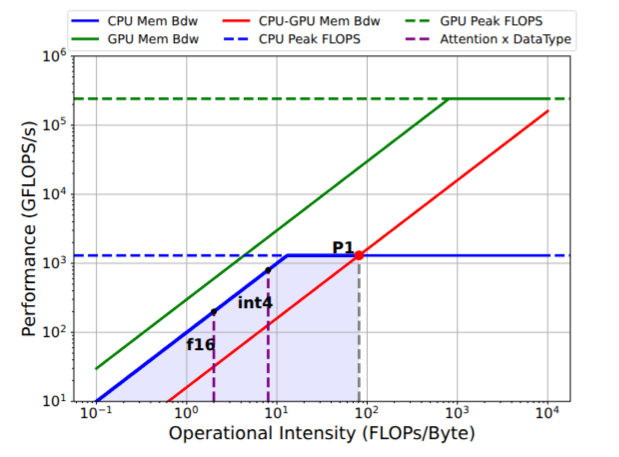
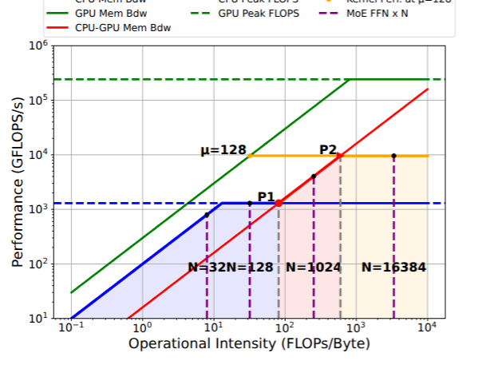
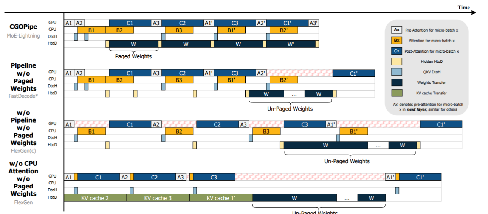
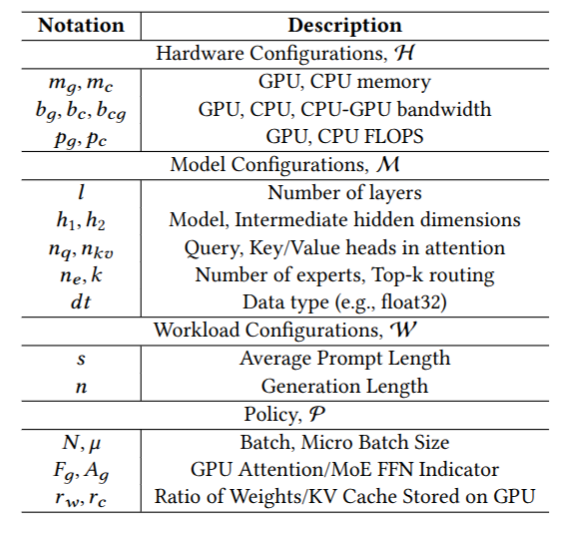

MoE-Lightning：在内存受限的 GPU 上实现高吞吐量的 MoE 推理¶
key idea
提出了多个内存层级上的 Roofline Model 以建模和分析、确定最佳的性能点；提出了 CGOPipe 的调度算法，利用 Paged Weights 和 Pipelining 的机制，提升了整体的吞吐率和性能。
Hierarchical Roofline Model¶
考虑一个 n 层架构的内存模型，每一层 i 都与一个处理器相连接。第 i 层的峰值带宽 \(B^i_{peak}\)，峰值计算能力 \(P^i_{peak}\)。类似的有
除此之外，在不同的层 i, j 之间还有内存带宽的限制，对于在 i 层执行并向 j 层传输数据的计算：
$ P_x^i \leq B_{peak}^{i,j} \cdot I_x^j $
那么引入的新的性能衡量的模型中，就会有更多的转折点，这意味着我们可以分析不同的区域对于不同的资源的需求。
如果 \(B^i_{peak} \cdot I^i_x < B^{j,i}_{peak} \times I_x^j < P^i_{peak}\),这意味着第 i 层受限于内存，此时增加第j层的Intensity 就不能够提升性能了，我们应当提升 \(I_x^i\) 使得 \(B^i_{peak} \cdot I^i_x\) 接近 \(B^{j,i}_{peak} \times I_x^j\)，以提升性能。这样的点称之为平衡点。所以我们的目标就是在给定内存约束的情况下找到最佳的平衡点。
如图是对于Attention的计算中的 Roofline model ，可以看到在 f16 和 int4 两种精度下，都处于平衡点P的左侧，即性能的瓶颈都受限于CPU-GPU的内存带宽。此时并没有必要使用 GPU 进行Attention的计算，从模型分析在CPU上进行计算可能会更好。

而下面的图像中是FFN的计算中的 Roofline Model，由于 FFN 的计算强度随着 Batch Size 的增加而增加，此时可以看到，在 I < P1 的时候，受限于 CPU-GPU 的 Memory Roof；而在 P1 < I < P2 的时候受限于 CPU-GPU 的内存带宽；而在 I > P2 的时候受限于 对应微批次的 Kernel 的性能峰值。

CGOPipe¶
作者主要提出了两种新的机制，新的流水线规划和 Paged Weights，来提升整体的性能。
Note
设备的任务划分：
- GPU 负责顺序地处理 Post-Attention 的计算(有关 O 投影和 FFN 的计算)，然后处理下一个微批次的 Pre-Attention 的任务（主要是 Layer Norm 和 QKV 的投影）
- 同时 CPU 处理下一个批次的Attention机制的计算(有关Softmax 的部分)，将后续层的权重传输到 GPU 上。
主要有 4 种数据的传输：
- D1 QKV DtoH : GPU 计算完 QKV 的投影后，将结果传输到 CPU 上。
- D2 Hidden HtoD 在 CPU 计算完 Attention 的计算后的隐藏态，需要从 CPU 传输到 GPU 上进行计算。
- D3 Wights Transfer 下一层的权重需要从 CPU 传输到 GPU 上进行计算。
- D4 KV cache Transfer 下一个微批次的 KV cache 需要从 CPU 传输到 GPU 上进行计算。
其中 D1 可以和 D2,D3,D4 并行进行，因为它们是不同方向上面的运输。
如图是 CGOPipe 的整体规划：

-
在 \(S_4\) 的调度中，由于 Attention 是在GPU进行计算的，所以需要 KV Cache 的传输；同时还需要 D1 的传输，更新 CPU 上的 KV Cache 的状态；由于所有的权重没有分块处理，此时还需要进行长时间的 D3 的传输，才能够进行下一层的计算。
-
在 \(S_3\) 的调度中，由于 Attention 是在 CPU 进行计算的，所以不需要 KV Cache 的传输；但必须在D1完成之后，才能够在CPU上进行Attention计算，并且还需要将数据传回GPU；由于所有的权重没有分块处理，此时还需要进行长时间的 D3 的传输，才能够进行下一层的计算。
-
但是考虑这些计算之间的依赖关系，这里显然存在许多的不必要的 Idle；例如 A2 Pre-Attention 的计算没有必要等到 C3 计算之后进行；对于 Bx 只需要完成了 QKV DtoH的传输之后就可以进行计算了；对于 Cx 只需要完成了 D2 的传输之后就可以进行计算了；所以我们得到了 \(S2\)
-
在 \(S2\) 中还是存在 Unpaged-Weights 占据了I/O 的大量时间导致 CPU和 GPU 空闲的状态；考虑将权重分为 n 个 page，见缝插针的放在D2传输之间，以最大化带宽的利用。这就是最终的 \(S1\) 的调度。
Search for Optimal Configuration¶
下面是搜索空间的参数约定：

考虑 HRM 中的限制，我们可以估计每一层的 Decode 的时延为：
$$
T(M,H,W,P) = max(comm^{C2G} , T_{cpu} , T_{gpu})
$$
这里的 comm 代表 CPU-GPU 之间的通信时间(即总的通信的 Bytes 除以带宽)。
对于 gpu 和 cpu 上面消耗的时间，可以表示为 $$ T^g_{gpu} = T_{attn}^g + T_{ffn}^g $$ ，其中 \(T_{attn}^g\) 是 Attention 的 GPU 计算时间，\(T_{ffn}^g\) 是 FFN 的 GPU 计算时间。同时还有
对于其他的T都是类似的。
由于硬件的设备参数是给定的，所以我们可以计算得到 \(comm_x^g = bytes_x / b_g\)，再加上 CPU 内存限制等，我们就可以得到一个优化问题并求解。